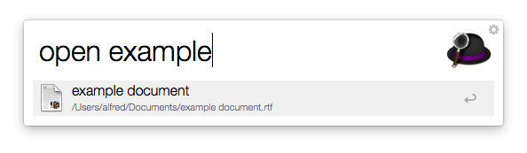
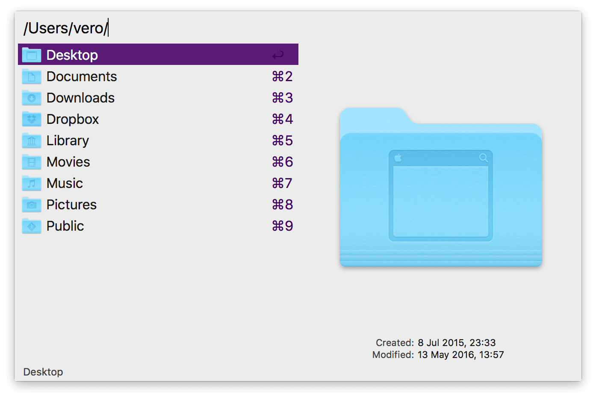
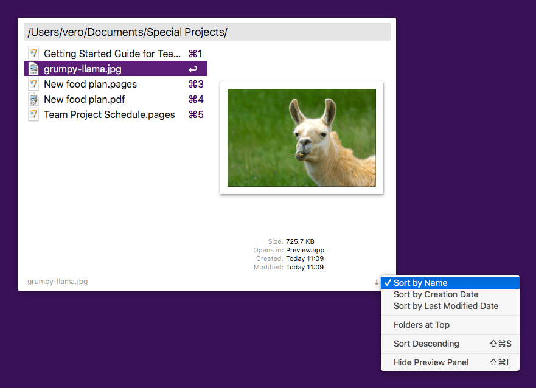
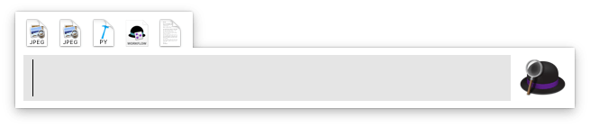
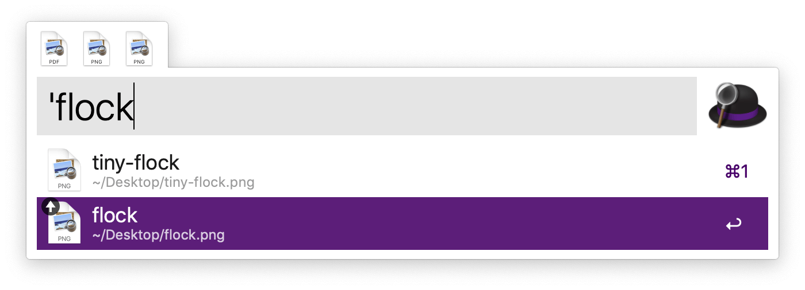
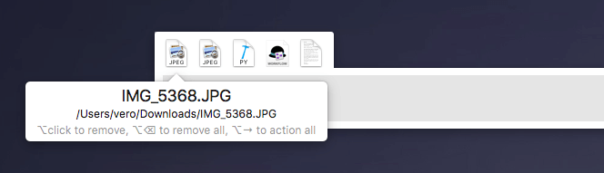
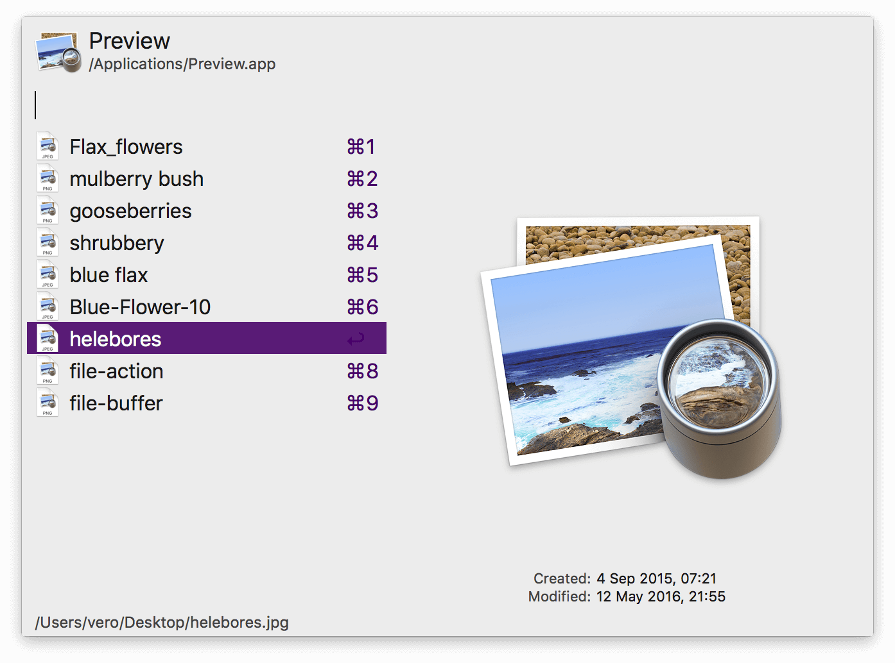

File Search
File Search is an essential part of Alfred's search functionality. It allows you to expand your search, navigate your Mac's directories and take action on files you find.
On this Feature page, you'll find out more about:
Looking for File Actions? They've moved in the Alfred 4 preferences, so you'll find the Actions documentation here instead. QuickLook and Previews have also been moved out of the File Search prefs.
File Search
Alfred's Default Results include the most essential file types; Applications, System Preferences, Contacts, and any file types you've added.
When you need to expand your search scope beyond these core file types included in Alfred's results, the File Search keywords are here to help you.
- Use the "open" keyword to open a file (or press the spacebar as a shortcut!)
- Use the "find" keyword to reveal the file in Finder
- Use the "in" keyword to search inside your files' content

You can customise these keywords in the Features > File Search preferences.
You can also choose which file types Alfred should not show in the results, and how many results Alfred should present.
If you're a Powerpack user, take a look at File Filters to create custom search filters based on file types or search scope, making your searches even more efficient.
File Navigation
Use Alfred to navigate through your Mac's file system. This is a great way to quickly make your way through folders without having to use the mouse.
To start, type:
- / (slash) to take you to the root folder on your Mac, or
- ~ (tilde) to go to your user directory.
From here, start typing the first few characters of the next folder or file you want Alfred to narrow his search to or use the arrow keys to go down to the folder you need.
Not sure of the file name? Add a * (star) to the start of your search term to make it into a wildcard.

You can tweak which keys are used to navigate through and open folders in File Navigation in the Features > File Search > Navigation preferences.
Sorting Preferences and Order
Using the cog in bottom right of the File Navigation window, you can customise the sorting by Name, Creation Date or Last Modified Date, and whether you want to show folders at the top.
You can set the order to ascending or descending either in the cog preferences, or by clicking the arrow next to it to swap the order.
⌘ + Shift + I can be used to show and hide the preview on the right side.

File Buffer
The File Buffer allows you to select multiple files and add them to a buffer. You can then take action on all of these files at once!

The buffer is controlled by using the ⌥ (Alt) key in combination with the selected file in Alfred's results.
- ⌥↑ to add a file to the buffer from Alfred's results
- ⌥↓ to add a file and move to the next item in your list of results
- ⌥← to remove the last item from the buffer
- ⌥→ to action all items in the buffer
- ⌥ backspace to remove all items from the buffer
You'll see an upwards arrow identifying the files you've already added to the buffer.

You can also see additional information about the particular file, as well as a cheatsheet of the key combinations when hovering over the files.

You can modify some of the preferences in Alfred's Preferences under Features > File Search > Buffer.
Want to take action on multiple files at once without first popping Alfred up? Select them in Finder and press the Finder Selection hotkey (which is ⌥⌘\ by default) to bring up the Actions panel.
Recent Documents
The Recent Documents feature helps you locate the files you've opened last in a particular application.
Search for the application you're looking for and press the right arrow to show the list of file actions for your app. You'll then see the list of available file actions for it; Recent Documents will be at the top of the list. Press the Return key to see your latest documents.

Known issue: this feature is not fully compatible with Microsoft Office and some other non-Cocoa (non-native macOS) applications. In these cases, only files opened with Alfred will appear in results due to the limitation of the third party software.
Learning more about file search
Want to do even more with file search?
- Use File Filter workflows to focus your search to file types and search scopes you need
- Use Tags to give your files labels/nicknames and search using those tags
You can also take a look at the Guides and Tutorials for more ways to be productive when searching your Mac.